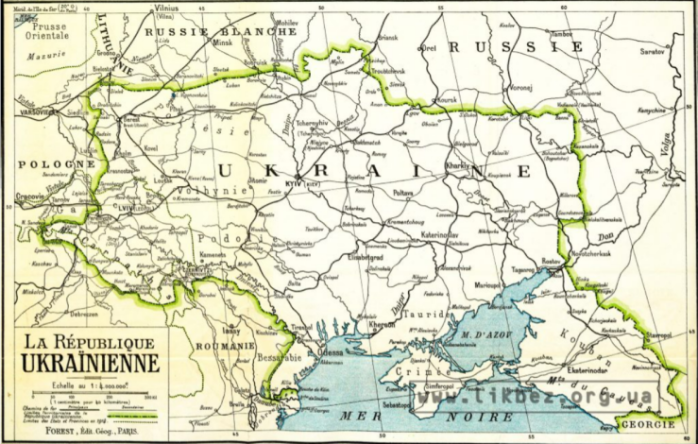
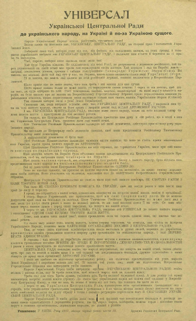
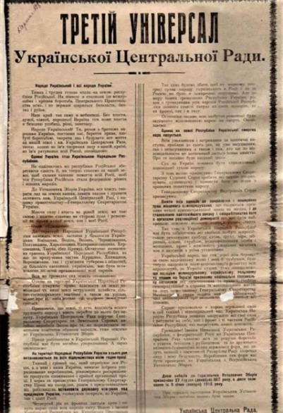
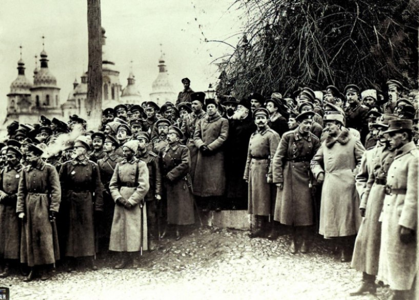

Вступ
Історія Української Народної Республіки (УНР) є важливим етапом в історії України. Вона виникла в період великих політичних та соціальних змін, коли розпад Австро-Угорщини та Російської імперії створив умови для здобуття незалежності українським народом. Реферат на тему "Історія Української Народної Республіки" можна поділити на кілька основних частин, кожна з яких охоплює ключові моменти цього періоду. Українська Народна Республіка була проголошена в листопаді 1917 року, в період, коли в Росії відбувалася жовтнева революція, а в Україні — національне відродження. Ідея незалежності України стала однією з основних політичних програм у той час, і УНР стала спробою реалізувати цю ідею в умовах революційних змін.
Передумови створення УНР
На початку ХХ століття Україна була частиною Російської імперії. Однак національні настрої серед українців активно розвивалися, завдяки діяльності таких організацій, як Товариство українських поступовців та інші національно свідомі групи. Український рух вийшов на новий рівень під час Першої світової війни, коли все більше людей почали виступати за автономію або навіть незалежність України. У 1917 році, після Лютневої революції в Росії, було оголошено про скасування царизму. Це створило сприятливі умови для політичних змін в Україні. 17 березня 1917 року була створена Центральна Рада — представницький орган, що відображав інтереси українських національних сил.
Проголошення УНР
7 (20) листопада 1917 року Центральна Рада, зважаючи на загрозу, що виходила від більшовицької влади в Росії, проголосила Українську Народну Республіку. Цей акт був продиктований бажанням українців вибороти власну державність у нових політичних реаліях. Перший Універсал Центральної Ради проголошував автономію України в межах Російської Республіки, що було важливим кроком на шляху до незалежності. Проте вже в наступних Універсалах, зокрема в Третьому Універсалі, був заявлений намір проголосити незалежність України, що стало можливим після відмови від більшовицької революційної політики та загострення відносин з Росією.
Перший Універсал УЦР і автономія України
В умовах загальнонаціонального піднесення Центральна рада наважилася на рішучий крок: 10 червня схвалила і того ж дня урочисто проголосила на Всеукраїнському військовому з‘їзді Універсал "До українського народу на Україні й поза Україною сущою", пізніше названий Першим універсалом, проголошував автономію України і закликав народ до організації нового політичного ладу в Україні. В Універсалі проголошувалося: "Хай Україна буде вільною. Не одділяючись від усієї Росії, не розриваючи з державою російською, хай народ український на своїй землі має право сам порядкувати своїм життям. Хай порядок і лад на Вкраїні дають вибрані все людним рівним і традиційним голосуванням Всенародні українські збори (Сейм)". В Універсалі висловлювалася надія на те, що неукраїнські народи, які живуть разом в Україні з українцями будуватимуть автономний устрій, здатний покінчити з безладдям у краї. Універсал справив величезне враження на суспільство. З місць йшли сотнями телеграми, в яких висловлювалися солідарність з Радою і запевненням у щирій підтримці.
Другий Універсал ЦР
У другому універсалі датованому 3 (16) липня 1917 року зазначалося, що Центральна Рада має поповнитися найближчим часом представниками інших народів, які живуть в Україні, після чого стане єдиним найвищим органом революційної демократії України. Зміст Універсалу свідчить, що Центральна Рада зробила істотні поступки урядові, який прагнув обмежити національно-визвольний рух певними рамками. Для українців цінність укладеної угоди істотно знижувалася тим, що не окреслювалась територія, на яку мала поширюватися вада Центральної Ради. Не уточнювалися також повноваження секретаріату, особливо в його стосунках з місцевими органами Тимчасового уряду, які продовжували існувати.
Третій універсал
1917, 20 листопада – Українська Центральна Рада прийняла Третій Універсал, яким проголошувалася Українська Народна Республіка (УНР). "Для того, щоби крайова власть стала справжньою фактичною властю, під нею повинна бути міцна підвалина, і такою може бути тільки проголошення Української Народної Республіки", - такими словами Михайло Грушевський відкрив 20 листопада засідання Малої ради. Через два дні у Софійському соборі відбувся святковий молебен, а на площі біля нього вишикувалися військові частини. В урочистій обстановці, під час великого народного віче було зачитано текст Універсалу. У документі були окреслені кордони УНР включно з Київщиною, Поділлям, Волинню, Чернігівщиною, Полтавщиною, Харківщиною, Катеринославщиною, Херсонщиною, Таврією (без Криму). "Остаточне визначення границь… що до прилучення частин Курщини, Холмщини, Вороніжчини і суміжних губерній та областей, де більшість населення українське, має бути встановлено по згоді організованої волі народу". Уся влада в країні, до проведення Установчих зборів належала Центральній Раді та Генеральному Секретаріату.
 Проголошувалося збереження федеративного зв’язку із Росією, яка б стала "федерацією рівних і вільних народів". Йшлося не про Російську Радянську Республіку, яку УЦР не визнала, а про буржуазну республіку. Скасовувалася приватна власность на поміщицькі, удільні, монастирські, кабінетні, церковні та інші землі. "Право власності на землі поміщицькі й інші землі нетрудових хозяйств сільськогосподарського значіння, а також на удільні, монастирські, кабінетські та церковні землі касується". Рада обіцяла добиватися якнайшвидшого встановлення миру, запровадження державного контролю на виробництві, встановлення восьмигодинного робочого дня. Проголошувалися демократичні права та свободи: слова, друку, віросповідань, зборів, спілок, страйків, недоторканність особи та житла, право використовувати місцеві мови у стосунках з державними установами, скасування смертної кари, амністію для всіх політичних в'язнів, незалежний суд. Принципи, сформульовані в цьому документі, було розвинуто й закріплено в окремих законах УНР. Зокрема, на початку грудня 1917 року ухвалено низку законів про реорганізацію судів, а 9 січня 1918 року – закон про охорону прав національних меншин.
Війна за незалежність та боротьба з більшовиками
З 1917 року Українська Народна Республіка вступила в серйозну боротьбу за свою незалежність. Почалася війна з більшовицькою Росією, яка прагнула встановити контроль над територією України. У цей період відбулися численні битви, обстріли та спроби встановлення радянської влади на українських землях. Більшовики намагалися встановити свою владу в Україні через кілька спроб, зокрема через Антонов-Овсієнківську повстанську армію, яка активно виступала проти Центральної Ради. Водночас, більшовики були зацікавлені в підтримці робітничого руху на території України, і це ускладнювало боротьбу УНР за незалежність.
Окупація,падіння, наслідки та спадщина УНР
Окупація та падіння УНР
Під впливом внутрішніх та зовнішніх факторів УНР почала слабшати. У грудні 1918 року на території України розпочалась окупація з боку німецьких військ, що означало фактичну втратою незалежності УНР. Після того, як німці вийшли з України у 1919 році, українські землі потрапили під контроль радянської Росії, що призвело до поразки Української Народної Республіки. Водночас боротьба за незалежність України продовжувалася. З'являлися нові спроби створення незалежних українських урядів, але остаточна перемога більшовиків призвела до створення Української РСР у складі Радянського Союзу.
Наслідки та спадщина УНР
Незважаючи на поразку УНР, цей період залишив значну спадщину в історії України. Проголошення незалежності стало символом національної боротьби, а Центральна Рада та інші органи влади УНР стали прикладом для наступних поколінь політиків і громадських діячів. Після поразки УНР і створення Української РСР боротьба за незалежність продовжувалася і в XX столітті, а остаточна незалежність України була здобута лише в 1991 році.
Висновок
Історія Української Народної Республіки є важливою частиною національної історії України, адже це був перший великий крок до здобуття незалежності. Попри тимчасові труднощі та поразки, ідеї УНР мали велике значення для розвитку української державності в наступні десятиліття.